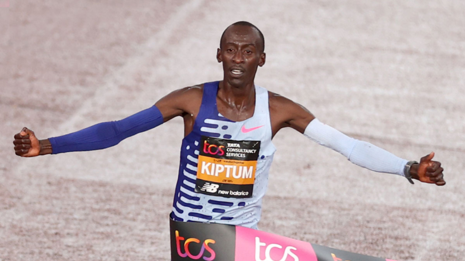
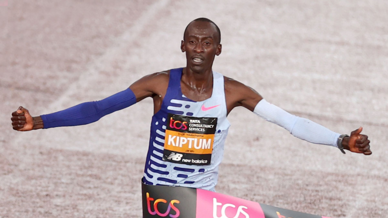
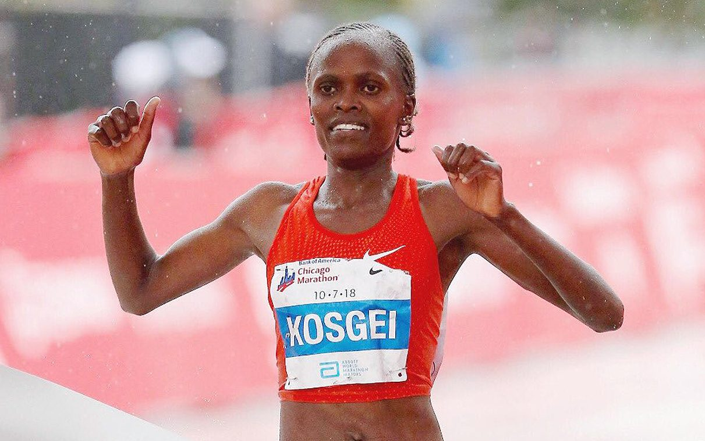
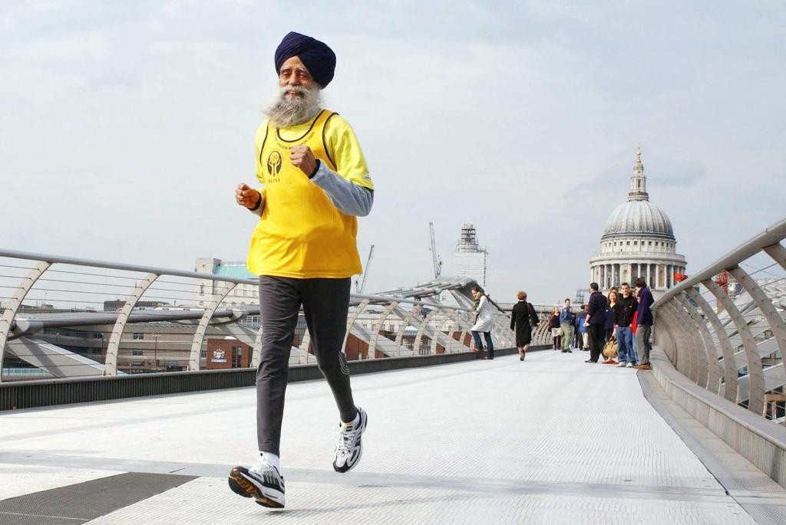

Победитель Лондонского марафона Киптум пробежал 2:00: 35, отстав на 34 секунды от отметки Кипчоге из Берлина в прошлом году
Публикация: 03.05.2023

Победитель Лондонского марафона Киптум пробежал 2:00: 35, отстав на 34 секунды от отметки Кипчоге из Берлина в прошлом году
Публикация: 03.05.2023
Первое место в женском зачете на Берлинском марафоне заняла представительница Эфиопии Тигист Ассефа. 29-летняя спортсменка преодолела дистанцию в 42 км за 2 часа 11 минут 53 секунды и установила новый мировой рекорд.
Публикация: 12.06.2023
Выходец из Индии Фауджа Сингх, в настоящее время проживающий в Великобритании, установил новый мировой рекорд. Он стал самым пожилым марафонцем мира
Публикация: .07.2023
